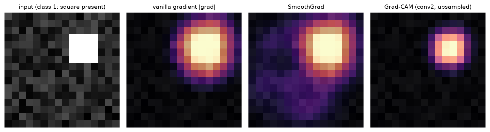
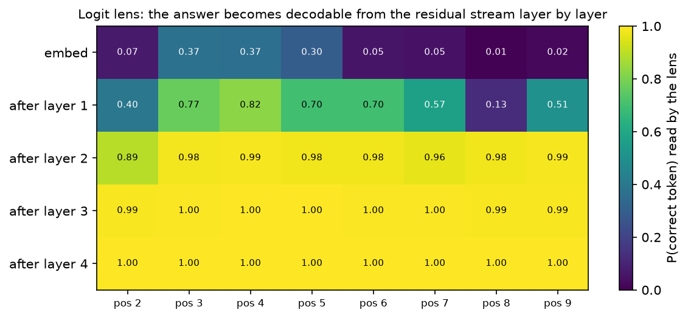
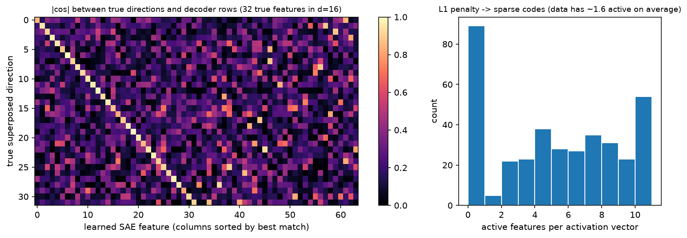

Interpretability¶
Why this matters at staff level. Interpretability shows up in interviews as a debugging question: a detector misses pedestrians in one intersection, a classifier's accuracy drops on a new camera, an LLM gives a confidently wrong answer. The strong answer names a specific method, says what it can and cannot establish, and gives the experiment that would settle the question. Correlational tools (saliency, attention maps) suggest hypotheses; causal tools (patching, ablation) test them. Knowing which is which is the signal.
TL;DR: the interview card¶
- Vanilla saliency is \(\partial f_c / \partial x\). It is noisy because the gradient is local and the model is piecewise linear. SmoothGrad averages it over \(n\) Gaussian-perturbed copies.
- Integrated gradients satisfies completeness: \(\sum_i \text{IG}_i(x) = f(x) - f(x')\), proved by the fundamental theorem of calculus along the straight path from baseline \(x'\) to \(x\). The baseline choice is part of the method, not a detail.
- Grad-CAM weights the last conv feature maps by their globally average-pooled gradients, \(\alpha_k = \frac{1}{HW}\sum_{ij}\partial y_c/\partial A_{kij}\), then takes \(\text{ReLU}(\sum_k \alpha_k A_k)\) and upsamples.
- Attention weights are not explanations. Attention can be altered substantially without changing predictions (Jain & Wallace), and the debate that followed (Wiegreffe & Pinter) settled on: attention is one component of a computation, so treat it as a hypothesis generator.
- Probing trains a classifier on frozen activations. High probe accuracy shows information is present and linearly decodable, not that the model uses it. Control tasks separate the two.
- Logit lens reads the residual stream at each layer through the final norm and unembedding, giving the model's intermediate guess at every depth.
- Activation patching copies one activation from a clean run into a corrupted run and measures recovery. This is a causal intervention, and it localises behaviour to (layer, position).
- Sparse autoencoders learn an overcomplete dictionary with an L1 penalty, \(L = \|x - \hat x\|^2 + \lambda\|f\|_1\), to decompose superposed activations into sparsely-active features. Anthropic scaled this to Claude 3 Sonnet in "Scaling Monosemanticity".
- Induction heads are the canonical discovered circuit: a previous-token head feeding a head
that attends to what followed the current token last time, implementing
[A][B] ... [A] -> [B].
1. Intuition first¶
Take a linear model, \(f(x) = w^\top x + b\) with \(x \in \R^3\), \(w = (2, -1, 0.5)\), and an input \(x = (1, 3, 4)\). Ask which input caused the output.
There are three defensible answers and they disagree:
- Gradient: \(\partial f/\partial x = (2, -1, 0.5)\). Feature 1 has the largest sensitivity. This tells you what happens if you wiggle an input, and nothing about what the input contributed.
- Gradient times input: \((2, -3, 2)\). Feature 2 contributes most in magnitude, negatively.
- Contribution relative to a baseline \(x' = (0,0,0)\): \(w \odot (x - x') = (2, -3, 2)\), and these sum to \(f(x) - f(x') = 1\), so the attribution accounts for the whole change in output.
For a linear model the last two coincide, and the third is integrated gradients. For a nonlinear model they separate, and the disagreement is the whole subject. A saturated ReLU unit has zero gradient at \(x\) yet may be the reason the output is large, so a pure-gradient method assigns it nothing. That failure motivates path methods.
The second idea to hold on to is the difference between reading and intervening. If you read an attention map and see that a head attends from "it" to "the dog", you have a correlation. If you copy that head's output from a run where the sentence says "the dog" into a run where it says "the car", and the model's prediction flips accordingly, you have shown the head carries that information. Attribution answers "what is associated with the output"; patching answers "what changes the output".
Third: modern models put more features into a layer than it has dimensions, a phenomenon called superposition. With \(d = 16\) dimensions and 32 underlying features that are each rarely active, a network can encode all 32 as near-orthogonal directions and tolerate the interference. Reading a single neuron then gives you a mixture of unrelated concepts (polysemanticity). Sparse autoencoders exist to undo that mixing.
2. The math¶
2.1 Saliency and SmoothGrad¶
For class score \(f_c\) (pre-softmax, because the softmax couples classes and makes the gradient depend on competitors):
SmoothGrad works because a ReLU network is piecewise linear: the gradient is constant inside a linear region and jumps at boundaries, so it fluctuates rapidly as a function of \(x\). Averaging over a neighbourhood of width \(\sigma\) estimates a locally smoothed sensitivity. The usual reporting choice, \(\sigma / (x_\max - x_\min) \in [0.1, 0.2]\) and \(n \approx 50\), comes from the original paper.
To visualise, collapse channels with \(\max_c |\nabla_{x}|\) and normalise to \([0,1]\).
2.2 Integrated gradients and the completeness axiom¶
Sundararajan, Taly and Yan (2017) asked which axioms an attribution method should satisfy and showed that path methods are forced by them. Define the straight-line path \(\gamma(t) = x' + t(x - x')\) for \(t \in [0,1]\) and
Completeness. Sum over coordinates and apply the chain rule to \(g(t) = f(\gamma(t))\):
The attributions account for exactly the change in output between baseline and input. Two other axioms come free from the path formulation: sensitivity (if \(x\) and \(x'\) differ in one feature and the outputs differ, that feature gets nonzero attribution, which plain gradients violate at saturation) and implementation invariance (two networks computing the same function get the same attributions, which methods that inspect internal structure violate).
In practice you approximate the integral with \(m\) Riemann steps. Using the midpoint rule, \(t_k = (k - \tfrac12)/m\), the completeness gap falls roughly as \(m^{-2}\): the implementation here gives gaps of \(6.0\times10^{-4}\), \(3.2\times10^{-5}\), \(1.9\times10^{-6}\) and \(1.0\times10^{-7}\) at \(m = 4, 16, 64, 256\) on a small tanh network. Report the gap; a large one means too few steps or a badly chosen baseline.
The baseline is a modelling choice. A black image encodes "absence of signal" for natural images but assigns zero attribution to genuinely black pixels. Alternatives: a blurred version of the input, the dataset mean, Gaussian noise, or an average over several baselines. State which one you used, because the attribution is defined relative to it.
2.3 Grad-CAM¶
Let \(A \in \R^{K \times H' \times W'}\) be the last convolutional feature maps and \(y_c\) the class score. Grad-CAM (Selvaraju et al. 2017) defines
The derivation that makes this more than a heuristic: for an architecture ending in global average pooling followed by a linear layer, \(y_c = \sum_k w_{ck}\,\frac{1}{H'W'}\sum_{ij}A_{kij}\), so \(\partial y_c/\partial A_{kij} = w_{ck}/(H'W')\) and therefore \(\alpha_k \propto w_{ck}\). Grad-CAM reduces to class activation mapping (CAM) for that architecture, and generalises it to any architecture by using the pooled gradient in place of the weight.
The ReLU keeps only evidence for class \(c\): negative contributions belong to other classes. The map has the spatial resolution of the chosen layer (7×7 for a standard ResNet on 224×224 inputs), which is why Grad-CAM localises objects but not edges, and why people combine it with a pixel-space method (guided backprop) when they want detail.
2.4 Attention maps, and what they do not show¶
A tempting reading of \(\alpha_{ij} = \softmax(q_i^\top k_j/\sqrt{d_k})_j\) is that token \(j\) explains the output at position \(i\). Jain and Wallace (2019) showed that for several classification models you can find alternative attention distributions that produce nearly the same prediction, and that attention weights correlate poorly with gradient-based importance. Wiegreffe and Pinter (2019) replied that the claim depends on what "explanation" is asked to mean, and that adversarial attention distributions found by direct optimisation do not show attention is uninformative about the model as trained.
The working position for an engineer: attention says where information could flow, not what the model did with it. Three concrete failure modes. Attention is one of several paths (the residual stream carries information past attention entirely). Softmax forces mass to sum to one, so heads with nothing to do dump mass on a "sink" token such as the first position. Value vectors can be near zero, in which case a large weight moves nothing. Test the hypothesis by ablating or patching the head.
2.5 Probing classifiers¶
Freeze the model, take activations \(h \in \R^d\) at some layer, train a small classifier \(g_\theta(h)\) to predict a property (part of speech, object colour, whether the agent is in a corridor). Accuracy above a control tells you the property is linearly decodable there.
Two controls make a probe a real experiment. A control task (Hewitt & Liang 2019) assigns the same inputs random labels of the same distribution; a powerful probe learns that too, so report selectivity, the accuracy gap between the real task and the control. A random-features control probes an untrained network of the same shape, which often does better than people expect.
A probe establishes availability. It does not establish use: the model can encode a property in its activations and never read it. Pair the probe with an intervention (patch or ablate the direction and check the output changes) before claiming the model relies on it.
2.6 The logit lens¶
Write a pre-norm decoder's forward pass as a residual stream:
Every block adds to \(h\), so \(h_l\) lives in the same space at every depth and can be decoded with the model's own final norm and unembedding:
This gives the model's intermediate prediction after each layer. On the copy task used here (predict the token two positions back), the probability of the correct token read from the lens goes \(0.02 \to 0.51 \to 0.99 \to 0.99 \to 1.00\) across embedding and four layers: the computation finishes early and later layers refine.
The caveat is that \(W_U\) was trained to read \(h_L\), not \(h_l\). Intermediate representations may be in a different basis, which is why later variants (tuned lens) learn an affine map per layer before unembedding. A flat or nonsense lens trajectory can mean the model computes late, or that the lens is mis-calibrated for that layer.
2.7 Activation patching and causal tracing¶
Take a clean input and a corrupted input that differ in the fact you care about. Run both. Then run the corrupted input again, but overwrite activation \((l, t)\) with the value it had in the clean run, and measure
with \(m\) a scalar behaviour metric, usually the logit difference between the correct answer and a distractor at the final position. A recovery near 1 means the information needed to restore the clean behaviour was in that single activation; near 0 means it was not.
Two sanity checks anchor the map. Patching \(h_L\) at the final position always gives recovery 1, because that is the clean run's final state. Patching positions the corruption never touched gives 0. Everything in between is signal: in the small model here, patching the embedding at the corrupted position gives 1.00, and at the middle layer the recovery splits between the corrupted position (0.58) and the final position (0.47), showing the information has begun moving forward.
Meng et al. (2022) used this design (noising the subject tokens, then restoring individual hidden states) to localise factual associations to mid-layer MLPs at the subject's last token, then built a weight edit (ROME) on that localisation. The general lesson: patching gives a necessary-and- sufficient-style claim about a specific activation for a specific behaviour, on a specific input distribution. It does not generalise beyond the prompts you tested.
2.8 Superposition and sparse autoencoders¶
If a layer of width \(d\) represents \(F \gg d\) features that are individually rare, it can store them as \(F\) near-orthogonal directions with small interference. Individual neurons then respond to unrelated concepts. To recover the features, learn an overcomplete dictionary with a sparsity penalty:
Three design points carry the method. The decoder rows are constrained to unit norm, otherwise the model shrinks \(f\) and grows \(W_\text{dec}\) to reduce the L1 term without becoming sparser. The encoder subtracts \(b_\text{dec}\) so the dictionary is centred. \(\lambda\) sets the point on the reconstruction-sparsity frontier, and it is the hyperparameter that matters: in the toy setup here (16 dimensions, 32 true features, 5 % active), \(\lambda = 0.02\) recovers features at mean cosine 0.66, while \(\lambda = 0.2\) reaches 0.93 with a worse reconstruction loss.
Evaluation of an SAE is unsettled. Reconstruction error and L0 (average number of active features) are the standard pair, plus the fraction of "dead" features that never fire, plus downstream loss when the reconstruction is spliced back into the model. In a toy setting you can do better, because the ground-truth directions are known: measure the best cosine between each true direction and any learned decoder row.
3. Implementation¶
3.1 Integrated gradients¶
def integrated_gradients(model, x, baseline, target, steps=64):
alphas = (torch.arange(steps, dtype=x.dtype) + 0.5) / steps # (m,) midpoint rule
delta = x - baseline # same shape as x
path = baseline.unsqueeze(0) + alphas.view(-1, *([1] * x.dim())) * delta.unsqueeze(0) # (m, *x.shape)
path = path.detach().requires_grad_(True)
scores = model(path)[:, target].sum() # scalar, summed over path points
(grads,) = torch.autograd.grad(scores, path) # (m, *x.shape)
return delta * grads.mean(dim=0) # same shape as x
The whole path is one batch, so the \(m\) gradient evaluations happen in a single backward pass. Summing the scores before differentiating is safe because path point \(k\)'s score depends only on path point \(k\), so the gradient of the sum is the stack of individual gradients.
The test checks the property, not a value: for a linear model IG must equal \(w_c \odot (x - x')\) exactly, and on a nonlinear network the completeness gap must shrink with more steps and reach \(10^{-3}\) or better at 256 steps.
3.2 Grad-CAM¶
def grad_cam(model, x, target):
A = model.features(x.unsqueeze(0)) # (1, K, H', W') last conv maps
A.retain_grad()
score = model.head(A)[0, target] # scalar class logit
(dA,) = torch.autograd.grad(score, A) # (1, K, H', W')
alpha = dA.mean(dim=(2, 3), keepdim=True) # (1, K, 1, 1) pooled gradients
cam = F.relu((alpha * A).sum(dim=1, keepdim=True)) # (1, 1, H', W')
cam = F.interpolate(cam, size=x.shape[-2:], mode="bilinear", align_corners=False) # (1, 1, H, W)
cam = cam[0, 0].detach() # (H, W)
return cam / (cam.max() + 1e-12)
Splitting TinyCNN into features and head avoids hooks and makes the derivation visible:
head is exactly global-average-pool then linear, so you can check by hand that
\(\alpha_k = w_{ck}/(H'W')\) for this model.
Testing a visualisation needs a model whose answer you know, so the test hand-sets the weights to
build a detector (conv channel 0 copies the input, fc reads channel 0 into class 1), places a
bright blob in the top-right of an 8×8 image, and asserts the CAM exceeds 0.9 inside the blob and
falls below 0.1 in the opposite corner.

A tiny CNN trained to detect a bright square. Vanilla gradients are scattered over the whole image, SmoothGrad concentrates them, and Grad-CAM produces a coarse blob at the square's location. The resolution difference between the pixel-space methods and Grad-CAM is the method's main limitation.
3.3 Logit lens¶
def residuals(self, tokens):
B, T = tokens.shape
h = self.embed(tokens) + self.pos(torch.arange(T)) # (B, T, d)
hs = [h]
for block in self.blocks:
h = block(h) # (B, T, d) each block adds to the stream
hs.append(h)
return hs
def logit_lens(model, tokens):
with torch.no_grad():
return torch.stack([model.unembed(model.ln_f(h)) for h in model.residuals(tokens)]) # (L+1, B, T, V)
TinyResidualLM is a pre-norm decoder with single-head attention written out as three separate
projections, so the residual stream is explicit. The test asserts logit_lens(...)[-1] equals
model(tokens), which is the consistency check that the lens is reading the same pathway the
model uses, and then that a trained model's lens trajectory rises with depth and ends above 0.5.

Probability of the correct token read from the residual stream after each layer, for each position. The model solves the copy task by layer 2 at most positions; positions near the start lack the context to solve it at all.
3.4 Activation patching¶
def forward_with_patch(model, tokens, layer, position, replacement):
T = tokens.shape[1]
h = model.embed(tokens) + model.pos(torch.arange(T)) # (1, T, d)
if layer == 0:
h = _patch(h, position, replacement)
for l, block in enumerate(model.blocks, start=1):
h = block(h) # (1, T, d)
if l == layer:
h = _patch(h, position, replacement) # overwrite one (position, d) vector
return model.unembed(model.ln_f(h)) # (1, T, V)
Re-running the forward pass with an explicit patch is clearer than registering hooks and is fast
enough at this size: patching_map runs \((L+1)\times T\) forward passes to fill the grid. For a
real model you would use hooks and batch the patches.
The test encodes the two anchors from §2.7: patching \(h_L\) at the last position gives recovery 1.0, and patching a clean activation into the clean run changes nothing.
3.5 Sparse autoencoder¶
class SparseAutoencoder(nn.Module):
def __init__(self, d, n_features):
super().__init__()
self.W_dec = nn.Parameter(torch.randn(n_features, d)) # (F, d)
self.b_dec = nn.Parameter(torch.zeros(d)) # (d,)
self.normalize_decoder()
# Tied initialisation W_enc = W_dec^T: each feature starts by detecting its own direction.
self.W_enc = nn.Parameter(self.W_dec.data.T.clone()) # (d, F)
self.b_enc = nn.Parameter(torch.zeros(n_features)) # (F,)
def encode(self, x):
return F.relu((x - self.b_dec) @ self.W_enc + self.b_enc) # (B, F)
def decode(self, f):
return f @ self.W_dec + self.b_dec # (B, d)
def sae_loss(x, x_hat, f, l1_coeff):
recon = ((x - x_hat) ** 2).sum(dim=1).mean() # scalar
sparsity = f.abs().sum(dim=1).mean() # scalar
return recon + l1_coeff * sparsity
train_sae re-normalises the decoder after every optimizer step, which is the cheap way to
enforce the unit-norm constraint (the alternative is to project the gradient onto the tangent
space of the sphere).
Writing this test taught me something worth repeating. The first version seeded the data generator
and the model with the same value, so torch.randn(32, 16) for the true directions and the first
32 rows of torch.randn(64, 16) for the decoder drew identical numbers, and feature recovery was
1.0 before any training. The test now uses a different seed for the data and asserts
before < 0.8, so the collision cannot come back silently. Random 16-dimensional directions have
a best-of-64 cosine around 0.59, which is the number the assertion is calibrated against.

Left: absolute cosine between each of the 32 true directions and the 64 learned decoder rows, columns sorted so the best match is on the diagonal. Right: the number of features active per input, showing the L1 penalty produced a sparse code.
Full implementation: src/mlbook/interp/integrated_gradients.py
"""Integrated gradients (Sundararajan, Taly & Yan 2017).
IG_i(x) = (x_i - x'_i) * integral_0^1 d f(x' + t (x - x')) / d x_i dt
Completeness (fundamental theorem of calculus along the straight path):
sum_i IG_i(x) = f(x) - f(x')
Riemann approximation with m steps (midpoint rule): t_k = (k - 0.5)/m.
"""
from __future__ import annotations
import torch
from torch import nn
def integrated_gradients(
model: nn.Module, x: torch.Tensor, baseline: torch.Tensor, target: int, steps: int = 64
) -> torch.Tensor:
"""IG attribution for one input x (any shape); baseline has the same shape."""
alphas = (torch.arange(steps, dtype=x.dtype) + 0.5) / steps # (m,)
delta = x - baseline # same shape as x
path = baseline.unsqueeze(0) + alphas.view(-1, *([1] * x.dim())) * delta.unsqueeze(0) # (m, *x.shape)
path = path.detach().requires_grad_(True)
scores = model(path)[:, target].sum() # scalar; sum over the m path points
(grads,) = torch.autograd.grad(scores, path) # (m, *x.shape)
return delta * grads.mean(dim=0) # same shape as x
def completeness_gap(model: nn.Module, x: torch.Tensor, baseline: torch.Tensor, target: int, steps: int = 64) -> float:
"""| sum_i IG_i - (f(x) - f(x')) |, should shrink as steps grows."""
ig = integrated_gradients(model, x, baseline, target, steps)
with torch.no_grad():
fx = model(x.unsqueeze(0))[0, target]
fb = model(baseline.unsqueeze(0))[0, target]
return float((ig.sum() - (fx - fb)).abs())
Full implementation: src/mlbook/interp/saliency.py and gradcam.py
"""Gradient saliency: vanilla gradients (Simonyan et al. 2014) and SmoothGrad
(Smilkov et al. 2017).
vanilla: S(x) = d f_c(x) / d x (same shape as x)
SmoothGrad: S(x) = (1/n) sum_i d f_c(x + eps_i) / d x, eps_i ~ N(0, sigma^2 I)
where f_c is the pre-softmax score of class c.
"""
from __future__ import annotations
import torch
from torch import nn
def vanilla_gradient(model: nn.Module, x: torch.Tensor, target: int) -> torch.Tensor:
"""d f_target / d x for a single input x: (C, H, W) or (d,) -> same shape."""
x = x.detach().clone().requires_grad_(True) # (C, H, W)
score = model(x.unsqueeze(0))[0, target] # scalar: class logit
(grad,) = torch.autograd.grad(score, x) # (C, H, W)
return grad.detach()
def smoothgrad(model: nn.Module, x: torch.Tensor, target: int, n_samples: int = 32, sigma: float = 0.15) -> torch.Tensor:
"""Average vanilla gradient over n Gaussian-perturbed copies of x. Same shape as x."""
acc = torch.zeros_like(x) # (C, H, W)
for _ in range(n_samples):
noisy = x + sigma * torch.randn_like(x) # (C, H, W)
acc += vanilla_gradient(model, noisy, target)
return acc / n_samples
def saliency_map(grad: torch.Tensor) -> torch.Tensor:
"""Collapse channels: max_c |grad| -> (H, W), normalised to [0, 1]."""
m = grad.abs().amax(dim=0) # (H, W)
return m / (m.max() + 1e-12)
"""Grad-CAM (Selvaraju et al. 2017) on a tiny CNN.
For the last conv feature map A in R^{K x H' x W'} and class score y_c:
alpha_k = (1 / (H' W')) sum_{i,j} d y_c / d A_{k,i,j} (global-average-pooled gradient)
CAM = ReLU( sum_k alpha_k A_k ) (H', W')
then upsample to the input size. ReLU keeps only evidence *for* the class.
"""
from __future__ import annotations
import torch
import torch.nn.functional as F
from torch import nn
class TinyCNN(nn.Module):
"""conv -> relu -> conv -> relu -> global-avg-pool -> linear. Input (B, 1, H, W)."""
def __init__(self, n_classes: int = 2, width: int = 8):
super().__init__()
self.conv1 = nn.Conv2d(1, width, 3, padding=1)
self.conv2 = nn.Conv2d(width, width, 3, padding=1)
self.fc = nn.Linear(width, n_classes)
def features(self, x: torch.Tensor) -> torch.Tensor:
h = F.relu(self.conv1(x)) # (B, K, H, W)
return F.relu(self.conv2(h)) # (B, K, H, W) <- the map Grad-CAM uses
def head(self, A: torch.Tensor) -> torch.Tensor:
return self.fc(A.mean(dim=(2, 3))) # (B, n_classes)
def forward(self, x: torch.Tensor) -> torch.Tensor:
return self.head(self.features(x)) # (B, n_classes)
def grad_cam(model: TinyCNN, x: torch.Tensor, target: int) -> torch.Tensor:
"""Grad-CAM heatmap for one image x: (1, H, W) -> (H, W) in [0, 1]."""
A = model.features(x.unsqueeze(0)) # (1, K, H', W')
A.retain_grad()
score = model.head(A)[0, target] # scalar
(dA,) = torch.autograd.grad(score, A) # (1, K, H', W')
alpha = dA.mean(dim=(2, 3), keepdim=True) # (1, K, 1, 1) pooled gradients
cam = F.relu((alpha * A).sum(dim=1, keepdim=True)) # (1, 1, H', W')
cam = F.interpolate(cam, size=x.shape[-2:], mode="bilinear", align_corners=False) # (1, 1, H, W)
cam = cam[0, 0].detach() # (H, W)
return cam / (cam.max() + 1e-12)
Full implementation: src/mlbook/interp/logit_lens.py and activation_patching.py
"""A tiny residual-stream language model plus the logit lens (nostalgebraist 2020).
Residual stream: h_0 = E[tokens] + pos; h_{l+1} = h_l + Attn_l(LN(h_l)) + MLP_l(LN(h_l))
Logit lens: read the residual stream after every layer with the *final* norm and
unembedding: logits_l = LN_f(h_l) W_U. Because every block only *adds* to h, the
model's intermediate guess is well defined at every layer.
"""
from __future__ import annotations
import torch
import torch.nn.functional as F
from torch import nn
class CausalSelfAttention(nn.Module):
"""Single-head causal attention with three explicit projections. (B, T, d) -> (B, T, d)."""
def __init__(self, d: int):
super().__init__()
self.q = nn.Linear(d, d, bias=False)
self.k = nn.Linear(d, d, bias=False)
self.v = nn.Linear(d, d, bias=False)
self.o = nn.Linear(d, d, bias=False)
def forward(self, x: torch.Tensor) -> torch.Tensor:
B, T, d = x.shape
Q, K, V = self.q(x), self.k(x), self.v(x) # each (B, T, d)
scores = Q @ K.transpose(1, 2) / d**0.5 # (B, T, T)
mask = torch.triu(torch.ones(T, T, dtype=torch.bool), diagonal=1) # (T, T)
scores = scores.masked_fill(mask, float("-inf")) # (B, T, T)
return self.o(torch.softmax(scores, dim=-1) @ V) # (B, T, d)
class Block(nn.Module):
def __init__(self, d: int):
super().__init__()
self.ln1, self.ln2 = nn.LayerNorm(d), nn.LayerNorm(d)
self.attn = CausalSelfAttention(d)
self.fc1, self.fc2 = nn.Linear(d, 4 * d), nn.Linear(4 * d, d)
def forward(self, h: torch.Tensor) -> torch.Tensor:
h = h + self.attn(self.ln1(h)) # (B, T, d)
return h + self.fc2(F.gelu(self.fc1(self.ln2(h)))) # (B, T, d)
class TinyResidualLM(nn.Module):
"""Pre-norm decoder: tokens (B, T) -> logits (B, T, V). Exposes ``residuals``."""
def __init__(self, vocab: int, d: int = 32, n_layers: int = 3, max_len: int = 32):
super().__init__()
self.embed = nn.Embedding(vocab, d)
self.pos = nn.Embedding(max_len, d)
self.blocks = nn.ModuleList([Block(d) for _ in range(n_layers)])
self.ln_f = nn.LayerNorm(d)
self.unembed = nn.Linear(d, vocab, bias=False)
def residuals(self, tokens: torch.Tensor) -> list[torch.Tensor]:
"""h_0 .. h_L, each (B, T, d)."""
B, T = tokens.shape
h = self.embed(tokens) + self.pos(torch.arange(T)) # (B, T, d)
hs = [h]
for block in self.blocks:
h = block(h) # (B, T, d)
hs.append(h)
return hs
def forward(self, tokens: torch.Tensor) -> torch.Tensor:
return self.unembed(self.ln_f(self.residuals(tokens)[-1])) # (B, T, V)
def logit_lens(model: TinyResidualLM, tokens: torch.Tensor) -> torch.Tensor:
"""Logits read from every residual position: (L + 1, B, T, V)."""
with torch.no_grad():
return torch.stack([model.unembed(model.ln_f(h)) for h in model.residuals(tokens)]) # (L+1, B, T, V)
def lens_trajectory(model: TinyResidualLM, tokens: torch.Tensor, position: int, answer: int) -> torch.Tensor:
"""Probability of ``answer`` at ``position`` after each layer: (L + 1,)."""
lens = logit_lens(model, tokens) # (L+1, B, T, V)
return torch.softmax(lens[:, 0, position], dim=-1)[:, answer] # (L+1,)
def train_copy_task(model: TinyResidualLM, vocab: int, T: int, steps: int = 300, seed: int = 0) -> float:
"""Train to predict token[t-2] at position t (an induction-like 'copy from 2 back')."""
g = torch.Generator().manual_seed(seed)
opt = torch.optim.Adam(model.parameters(), lr=3e-3)
for _ in range(steps):
tokens = torch.randint(0, vocab, (16, T), generator=g) # (B, T)
logits = model(tokens)[:, 2:] # (B, T-2, V) predictions at positions 2..T-1
loss = F.cross_entropy(logits.reshape(-1, vocab), tokens[:, :-2].reshape(-1))
opt.zero_grad()
loss.backward()
opt.step()
return float(loss.detach())
"""Activation patching / causal tracing (Meng et al. 2022; Vig et al. 2020).
Run the model on a *clean* input and a *corrupted* input. Copy one activation
(layer l, position t) from the clean run into the corrupted run and measure how
much of the clean behaviour is restored:
recovery(l, t) = (metric(patched) - metric(corrupt)) / (metric(clean) - metric(corrupt))
where metric = logit of the clean answer minus logit of the corrupted answer at the
final position. A recovery near 1 means (l, t) carries the causally relevant information.
"""
from __future__ import annotations
import torch
from mlbook.interp.logit_lens import TinyResidualLM
def forward_with_patch(model: TinyResidualLM, tokens: torch.Tensor, layer: int, position: int, replacement: torch.Tensor) -> torch.Tensor:
"""Forward pass where residual h_layer[:, position] is overwritten by ``replacement`` (d,).
tokens: (1, T) -> logits (1, T, V). ``layer`` indexes h_0 .. h_L (0 = embeddings).
"""
T = tokens.shape[1]
h = model.embed(tokens) + model.pos(torch.arange(T)) # (1, T, d)
if layer == 0:
h = _patch(h, position, replacement)
for l, block in enumerate(model.blocks, start=1):
h = block(h) # (1, T, d)
if l == layer:
h = _patch(h, position, replacement)
return model.unembed(model.ln_f(h)) # (1, T, V)
def _patch(h: torch.Tensor, position: int, replacement: torch.Tensor) -> torch.Tensor:
h = h.clone() # (1, T, d)
h[0, position] = replacement # (d,)
return h
def logit_diff(logits: torch.Tensor, answer: int, distractor: int) -> float:
"""logit[answer] - logit[distractor] at the last position; logits (1, T, V)."""
last = logits[0, -1] # (V,)
return float(last[answer] - last[distractor])
def patching_map(model: TinyResidualLM, clean: torch.Tensor, corrupt: torch.Tensor, answer: int, distractor: int) -> torch.Tensor:
"""Recovery fraction for every (layer, position): (L + 1, T)."""
with torch.no_grad():
clean_res = model.residuals(clean) # list of (1, T, d)
m_clean = logit_diff(model(clean), answer, distractor)
m_corr = logit_diff(model(corrupt), answer, distractor)
L, T = len(clean_res) - 1, clean.shape[1]
out = torch.zeros(L + 1, T) # (L+1, T)
for l in range(L + 1):
for t in range(T):
patched = forward_with_patch(model, corrupt, l, t, clean_res[l][0, t])
out[l, t] = (logit_diff(patched, answer, distractor) - m_corr) / (m_clean - m_corr + 1e-9)
return out
Full implementation: src/mlbook/interp/sparse_autoencoder.py
"""A sparse autoencoder (SAE) for dictionary learning on activations
(Bricken et al. 2023, "Towards Monosemanticity").
f(x) = ReLU( (x - b_dec) W_enc + b_enc ) features, (B, F), F > d
x_hat = f(x) W_dec + b_dec reconstruction, (B, d)
L = ||x - x_hat||^2_2 + lambda * ||f(x)||_1 with rows of W_dec unit-norm
The L1 penalty makes most features zero on any given input; unit-norm decoder rows
stop the model from shrinking f and growing W_dec to cheat the penalty.
"""
from __future__ import annotations
import torch
import torch.nn.functional as F
from torch import nn
class SparseAutoencoder(nn.Module):
"""x (B, d) -> features (B, F) -> x_hat (B, d)."""
def __init__(self, d: int, n_features: int):
super().__init__()
self.W_dec = nn.Parameter(torch.randn(n_features, d)) # (F, d)
self.b_dec = nn.Parameter(torch.zeros(d)) # (d,)
self.normalize_decoder()
# Tied initialisation W_enc = W_dec^T: each feature starts by detecting its own direction.
self.W_enc = nn.Parameter(self.W_dec.data.T.clone()) # (d, F)
self.b_enc = nn.Parameter(torch.zeros(n_features)) # (F,)
@torch.no_grad()
def normalize_decoder(self) -> None:
self.W_dec.data = F.normalize(self.W_dec.data, dim=1) # unit-norm rows (F, d)
def encode(self, x: torch.Tensor) -> torch.Tensor:
return F.relu((x - self.b_dec) @ self.W_enc + self.b_enc) # (B, F)
def decode(self, f: torch.Tensor) -> torch.Tensor:
return f @ self.W_dec + self.b_dec # (B, d)
def forward(self, x: torch.Tensor) -> tuple[torch.Tensor, torch.Tensor]:
f = self.encode(x) # (B, F)
return self.decode(f), f # (B, d), (B, F)
def sae_loss(x: torch.Tensor, x_hat: torch.Tensor, f: torch.Tensor, l1_coeff: float) -> torch.Tensor:
"""Mean over batch of ||x - x_hat||^2 + lambda ||f||_1."""
recon = ((x - x_hat) ** 2).sum(dim=1).mean() # scalar
sparsity = f.abs().sum(dim=1).mean() # scalar
return recon + l1_coeff * sparsity
def make_superposition_data(n: int, d: int, n_true: int, p_active: float, seed: int = 0) -> tuple[torch.Tensor, torch.Tensor]:
"""n activations that are sparse combinations of n_true > d random unit directions.
Returns (X (n, d), directions (n_true, d)).
"""
g = torch.Generator().manual_seed(seed)
dirs = F.normalize(torch.randn(n_true, d, generator=g), dim=1) # (n_true, d)
active = (torch.rand(n, n_true, generator=g) < p_active).float() # (n, n_true)
mags = torch.rand(n, n_true, generator=g) + 0.5 # (n, n_true)
return (active * mags) @ dirs, dirs # (n, d)
def train_sae(sae: SparseAutoencoder, X: torch.Tensor, l1_coeff: float, steps: int, lr: float = 1e-2, batch: int = 256) -> float:
"""Adam on sae_loss with decoder re-normalisation after each step; returns final loss."""
opt = torch.optim.Adam(sae.parameters(), lr=lr)
g = torch.Generator().manual_seed(0)
for _ in range(steps):
idx = torch.randint(0, X.shape[0], (batch,), generator=g) # (batch,)
x = X[idx] # (batch, d)
x_hat, f = sae(x)
loss = sae_loss(x, x_hat, f, l1_coeff)
opt.zero_grad()
loss.backward()
opt.step()
sae.normalize_decoder()
return float(loss.detach())
def feature_recovery(sae: SparseAutoencoder, dirs: torch.Tensor) -> torch.Tensor:
"""For each true direction, the best |cosine| with any learned decoder row: (n_true,)."""
cos = dirs @ sae.W_dec.detach().T # (n_true, F)
return cos.abs().amax(dim=1) # (n_true,)
How you'd test it. Attribution methods against closed forms on linear models (IG equals \(w \odot (x - x')\), vanilla saliency equals \(w_c\)); completeness gap shrinking with steps; Grad-CAM localisation on a hand-built detector; logit lens final layer equal to the model output; patching recovery equal to 1 at the two anchors; SAE recovery against known ground-truth directions with a pre-training baseline assertion.
Retype by hand¶
| Symbol | File | Retype from memory? | Target time |
|---|---|---|---|
integrated_gradients, completeness_gap |
src/mlbook/interp/integrated_gradients.py |
Yes, integrated gradients | 10 minutes |
grad_cam |
src/mlbook/interp/gradcam.py |
Yes, Grad-CAM including the pooled gradient | 10 minutes |
vanilla_gradient, smoothgrad, saliency_map |
src/mlbook/interp/saliency.py |
Yes | 5 minutes |
SparseAutoencoder.encode/decode, sae_loss |
src/mlbook/interp/sparse_autoencoder.py |
Yes, the SAE objective and the unit-norm constraint | 15 minutes |
logit_lens, TinyResidualLM.residuals |
src/mlbook/interp/logit_lens.py |
Yes, the residual-stream loop and the lens | 10 minutes |
forward_with_patch, patching_map |
src/mlbook/interp/activation_patching.py |
Yes, the recovery metric | 15 minutes |
TinyCNN, Block, CausalSelfAttention, make_superposition_data, train_sae, feature_recovery |
same files | Read and understand |
Checks: pytest tests/test_interp_integrated_gradients.py tests/test_interp_gradcam.py tests/test_interp_saliency.py tests/test_interp_sae.py tests/test_interp_logit_lens.py tests/test_interp_activation_patching.py -q.
4. Systems view: cost, failure modes, trade-offs¶
| Method | Cost | Establishes | Breaks when |
|---|---|---|---|
| Vanilla saliency | 1 backward pass | local sensitivity | saturation, piecewise-linear noise |
| SmoothGrad | \(n\) backward passes (32 to 50) | smoothed sensitivity | \(\sigma\) mis-set for the input scale |
| Integrated gradients | \(m\) forward+backward (32 to 300) | contribution relative to a baseline | baseline is unrepresentative |
| Grad-CAM | 1 forward + 1 backward | coarse spatial evidence for a class | resolution too low; non-conv architectures |
| Probing | training a small classifier | information is linearly decodable | no control task, so probe capacity confounds |
| Logit lens | \(L\) unembeddings, no training | intermediate predictions | basis mismatch at early layers |
| Activation patching | \(O(L \cdot T)\) forward passes | causal role of an activation | conclusions limited to the tested prompts |
| Sparse autoencoders | a training run per layer, plus large activation datasets | a sparse feature decomposition | \(\lambda\) mis-set, dead features, no ground truth to check against |
The sanity checks that should be reflexive. Adebayo et al. (2018) showed that several popular saliency maps look essentially unchanged when you randomise the model's weights, or randomise the training labels, which means those maps were partly reflecting the input's edges rather than the model. Run both randomisation tests on any attribution method before you trust it in a report. This is the single most useful negative result in the field for a practitioner.
What interpretability buys in production.
- Debugging perception models. A detector that fails on one intersection: Grad-CAM over the failing frames shows whether the model keys on the object or on background context. Follow with an intervention (paste the object onto other backgrounds) to confirm.
- Shortcut and bias audits. Probes and attributions locate reliance on a spurious attribute; the audit then needs a counterfactual test set, because attribution alone does not quantify the effect on decisions.
- Data quality. Attribution concentrated on a watermark, a border artefact, or a sensor timestamp is usually a dataset problem, not a model problem.
- Model cards and documentation. Model cards (Mitchell et al. 2019) ask for intended use, evaluation by subgroup, and known limitations. Interpretability supplies the evidence for the limitations section.
- Feature steering and monitoring. Once SAE features are labelled, activating or suppressing one gives a behavioural test, and monitoring a safety-relevant feature gives a runtime signal.
Costs to state honestly. SAEs require a training run per layer on a large activation dump, which for a frontier model is a serious compute commitment. Patching scales as layers times positions per prompt. Attribution methods produce a picture, and pictures invite over-reading, which is why the strongest production use pairs every attribution with an intervention that would falsify it.
5. In production¶
Anthropic: Towards Monosemanticity (2023)
Problem: individual neurons in a transformer respond to unrelated concepts, so neuron-level interpretation fails. Built: a sparse autoencoder on the MLP activations of a one-layer transformer, producing thousands of features that are far more monosemantic than neurons, with evidence from feature activations, causal effects on outputs, and the ability to steer behaviour by activating features. Rejected: neuron-level analysis, on the grounds that superposition makes it the wrong unit. Source: Bricken et al., "Towards Monosemanticity: Decomposing Language Models With Dictionary Learning", Transformer Circuits Thread, 2023.
Anthropic: Scaling Monosemanticity (2024)
Problem: does dictionary learning work on a production model. Built: SAEs on Claude 3 Sonnet's middle-layer residual stream, extracting millions of features including abstract and multilingual ones, and multimodal features that fire on both text and images. They showed causal influence by clamping features and observing behaviour change, including safety-relevant features. The paper is the reference for "interpretability at production scale" and for the honest limitations section (feature completeness, cost, evaluation). Source: Templeton et al., "Scaling Monosemanticity: Extracting Interpretable Features from Claude 3 Sonnet", Transformer Circuits Thread, 2024.
Anthropic: induction heads and in-context learning (2022)
Problem: where does in-context learning come from. Built: a circuit-level account of induction heads, pairs of attention heads that implement "find the previous occurrence of the current token and copy what followed it", together with evidence that their formation coincides with a visible bump in the training loss curve and with the onset of in-context learning. This is the strongest existing example of a discovered mechanism tied to a capability. Sources: Elhage et al., "A Mathematical Framework for Transformer Circuits", 2021; Olsson et al., "In-context Learning and Induction Heads", 2022, arXiv:2209.11895.
Google: model cards, and interpretability as documentation
Problem: models were shipped without a standard statement of intended use and evaluated performance across groups. Built: model cards, a short structured document covering intended use, out-of-scope use, disaggregated evaluation, and ethical considerations, now a common requirement in regulated deployments. Interpretability results are what populate the limitations and failure-mode sections. Source: Mitchell et al., "Model Cards for Model Reporting", FAT 2019, arXiv:1810.03993.*
Google Brain: sanity checks for saliency maps (2018)
Problem: saliency methods were being adopted without validation. Built: two randomisation tests (randomise model weights layer by layer; randomise training labels) and showed several widely used methods produce nearly unchanged maps under both, meaning they act partly as edge detectors independent of the learned function. The practical consequence is that these two tests are now the minimum bar before publishing an attribution result. Source: Adebayo et al., "Sanity Checks for Saliency Maps", NeurIPS 2018, arXiv:1810.03292.
6. Interview questions and strong answers¶
Derive the completeness axiom for integrated gradients and say why it matters.
Define \(g(t) = f(x' + t(x-x'))\). Then \(g'(t) = \sum_i \partial_i f(\gamma(t))\,(x_i - x'_i)\), and \(\int_0^1 g'(t)dt = g(1) - g(0) = f(x) - f(x')\). The left side is exactly \(\sum_i \text{IG}_i(x)\), so the attributions sum to the change in output between baseline and input. Completeness makes attributions comparable and auditable: you can say "these five pixels account for 80 % of the logit difference from a black image" and the remaining 20 % is accounted for elsewhere, instead of reporting an unnormalised heatmap. It also gives you a diagnostic, since the residual gap measures the Riemann approximation error. Staff follow-up: "what does completeness not buy you?" It says nothing about whether the baseline is meaningful. With a black baseline, genuinely black pixels get zero attribution by construction, so a model that relies on dark regions will look like it relies on nothing there.
Is attention an explanation?
Treat attention as a hypothesis, then test it causally. Jain and Wallace showed that for several classification models you can construct different attention distributions that leave predictions nearly unchanged, and that attention correlates poorly with gradient-based importance; Wiegreffe and Pinter argued the conclusion depends on the definition of explanation and that adversarially constructed distributions do not describe the trained model. Mechanistically there are clear reasons for the gap: the residual stream routes information around attention, softmax forces the weights to sum to one so idle heads park mass on a sink token, and a large weight on a near-zero value vector moves nothing. The experiment that settles a specific claim is ablating or patching the head and measuring the behaviour change. Follow-up: "so what do you do with attention maps?" Use them to generate candidates for patching, and to communicate with non-specialists once a causal test supports the story.
A pedestrian detector fails at one intersection. How do you use interpretability to debug it?
First separate data from model: collect the failing frames and check whether similar frames exist in training. Then run Grad-CAM on the failures and on nearby successes; if the successes key on the pedestrian and the failures key on a background region, that is a hypothesis about a spurious cue. Test it with interventions rather than more heatmaps: paste the pedestrians onto other backgrounds, and paste that background behind pedestrians elsewhere. If the failure follows the background, the model learned a shortcut and the fix is data (targeted collection, augmentation) rather than architecture. Run the two sanity checks (weight randomisation, label randomisation) on the attribution method before trusting the picture at all. Follow-up: "how do you turn this into a regression test?" Freeze the counterfactual set as a slice in the evaluation suite and track it per release, so the shortcut cannot silently return.
What is superposition and what do sparse autoencoders do about it?
A layer of width \(d\) can represent many more than \(d\) features when each feature is rarely active, by placing them along near-orthogonal directions and tolerating interference. The cost is that a single neuron responds to unrelated concepts, so neuron-level interpretation fails. An SAE learns an overcomplete dictionary with an L1 penalty, \(L = \|x - \hat x\|^2 + \lambda\|f\|_1\) with unit-norm decoder rows, so the code is sparse and each learned direction can be a single concept. Anthropic scaled this from a one-layer model to Claude 3 Sonnet, extracting millions of features and demonstrating causal effect by clamping them. Follow-up: "how do you know the features are real and not artefacts of the L1?" In a toy setting compare against known ground-truth directions; on a real model the available evidence is reconstruction error at a given L0, downstream loss when splicing the reconstruction back in, dead-feature fraction, and above all the causal test of clamping a feature and observing the predicted behaviour change.
Explain activation patching, and what a recovery of 0.6 at (layer 8, position 4) means.
Run a clean and a corrupted prompt that differ in one fact, then re-run the corrupted prompt with the clean value of one activation and measure \((m_\text{patched} - m_\text{corrupt})/(m_\text{clean} - m_\text{corrupt})\) where \(m\) is the logit difference between the right answer and a distractor. A recovery of 0.6 says that activation carries a majority of the information needed to restore clean behaviour, but not all of it, so the computation is distributed across several sites or the patch site is upstream of a split. Next steps: patch pairs of sites to check for redundancy, patch attention-head outputs rather than the whole residual to localise further, and repeat over many prompt pairs since the claim holds only on the distribution tested. Follow-up: "what are your controls?" Patching \(h_L\) at the final position must give exactly 1, patching untouched positions must give 0, and patching clean-into-clean must change nothing.
You have a probe that reads 'distance to the lead vehicle' from a planner's hidden state at 92 % accuracy. What have you shown?
That the quantity is present and linearly decodable at that layer, nothing more. Two controls are needed before even that claim is safe: a control task with random labels of the same distribution, to show the probe is not just memorising, and a probe on an untrained network of the same architecture, which is often surprisingly strong. To show the model uses the quantity, intervene: ablate the direction the probe found, or patch it from a scenario with a different lead distance, and check whether the planner's output changes in the predicted direction. Follow-up: "how would this feed a safety case?" As supporting evidence only. The safety argument needs behavioural evidence on a scenario suite; the probe explains a mechanism and helps target which scenarios to test.
7. Exercises¶
-
★ Show that for a linear model \(f(x) = w^\top x + b\) with baseline \(x' = 0\), integrated gradients equals \(w \odot x\), and verify completeness by hand.
Solution
The gradient is constant, \(\partial f/\partial x_i = w_i\), so the integral evaluates to \(w_i\) and \(\text{IG}_i = (x_i - 0)w_i\). Summing gives \(w^\top x = f(x) - f(0)\) since \(f(0) = b\). The test
test_integrated_gradients_linear_model_is_w_times_deltachecks this to \(10^{-6}\). -
★ A ReLU unit is saturated at zero for input \(x\), yet removing it changes the output. Which attribution methods assign it zero, and which do not?
Solution
Vanilla gradients and gradient times input assign zero, because the local derivative is zero. Integrated gradients does not, because along the path from a baseline the unit is active for part of the interval, which is exactly the sensitivity axiom the path formulation was designed to satisfy.
-
★★ Run the two sanity checks from Adebayo et al. on the
TinyCNNinfigures/part15_gradcam.py: re-randomise the weights and re-plot the saliency and Grad-CAM maps. Which method degrades and which does not?Solution
Grad-CAM depends on the learned feature maps and the class weights, so its map collapses to noise under weight randomisation. Pixel-space gradient magnitude retains visible structure from the input's edges even with random weights, which is the effect the paper reports. Report both maps side by side; the comparison is the result.
-
★★ Sweep the SAE's \(\lambda\) over \(\{0.02, 0.05, 0.1, 0.2, 0.3\}\) and plot mean feature recovery against reconstruction loss. Where is the knee, and what does the L0 do?
Solution
Recovery rises with \(\lambda\) (0.66 at 0.02, 0.93 at 0.2, 0.96 at 0.3 in this setup) while reconstruction loss rises too (0.07 to 0.49), and the mean number of active features falls toward the true 5 % sparsity. The knee sits near \(\lambda = 0.2\). Plotting recovery against loss traces the frontier that, on a real model, you can only see from one side.
-
★★★ Build a two-token patching experiment on
TinyResidualLMwhere the corruption is at position 2 and the answer depends on it, then patch attention outputs rather than residuals by modifyingforward_with_patch. Which is more localising, and why?Solution
Add a hook point inside
Block.forwardbetween the attention and MLP sublayers and patchself.attn(self.ln1(h))directly. Patching attention outputs is more localising because the residual stream accumulates every previous contribution, so a residual patch restores everything computed up to that layer, while an attention-output patch restores only that sublayer's contribution. The trade-off is that per-sublayer patching needs more runs and can miss effects that only appear in combination.
References¶
- Simonyan, K., Vedaldi, A., Zisserman, A. Deep Inside Convolutional Networks: Visualising Image Classification Models and Saliency Maps. ICLR workshop 2014. arXiv:1312.6034.
- Smilkov, D. et al. SmoothGrad: removing noise by adding noise. 2017. arXiv:1706.03825.
- Sundararajan, M., Taly, A., Yan, Q. Axiomatic Attribution for Deep Networks. ICML 2017. arXiv:1703.01365.
- Selvaraju, R. R. et al. Grad-CAM: Visual Explanations from Deep Networks via Gradient-based Localization. ICCV 2017. arXiv:1610.02391.
- Zhou, B. et al. Learning Deep Features for Discriminative Localization. CVPR 2016. arXiv:1512.04150 (CAM, the special case Grad-CAM generalises).
- Adebayo, J. et al. Sanity Checks for Saliency Maps. NeurIPS 2018. arXiv:1810.03292.
- Jain, S., Wallace, B. C. Attention is not Explanation. NAACL 2019. arXiv:1902.10186.
- Wiegreffe, S., Pinter, Y. Attention is not not Explanation. EMNLP 2019. arXiv:1908.04626.
- Hewitt, J., Liang, P. Designing and Interpreting Probes with Control Tasks. EMNLP 2019. arXiv:1909.03368.
- Meng, K. et al. Locating and Editing Factual Associations in GPT. NeurIPS 2022. arXiv:2202.05262.
- Vig, J. et al. Investigating Gender Bias in Language Models Using Causal Mediation Analysis. NeurIPS 2020.
- Elhage, N. et al. A Mathematical Framework for Transformer Circuits. Transformer Circuits Thread, 2021.
- Olsson, C. et al. In-context Learning and Induction Heads. Transformer Circuits Thread, 2022. arXiv:2209.11895.
- Bricken, T. et al. Towards Monosemanticity: Decomposing Language Models With Dictionary Learning. Transformer Circuits Thread, 2023.
- Templeton, A. et al. Scaling Monosemanticity: Extracting Interpretable Features from Claude 3 Sonnet. Transformer Circuits Thread, 2024.
- Elhage, N. et al. Toy Models of Superposition. Transformer Circuits Thread, 2022. arXiv:2209.10652.
- nostalgebraist. interpreting GPT: the logit lens. LessWrong, 2020.
- Mitchell, M. et al. Model Cards for Model Reporting. FAT* 2019. arXiv:1810.03993.